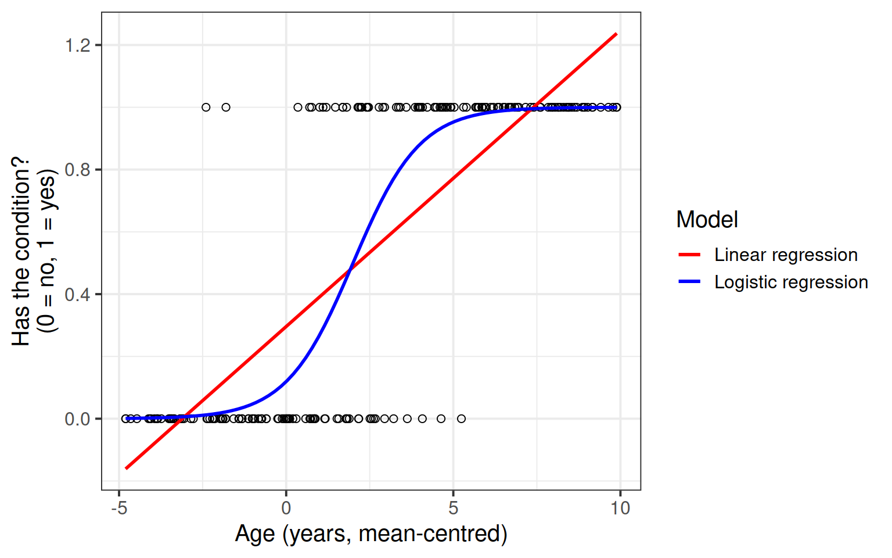
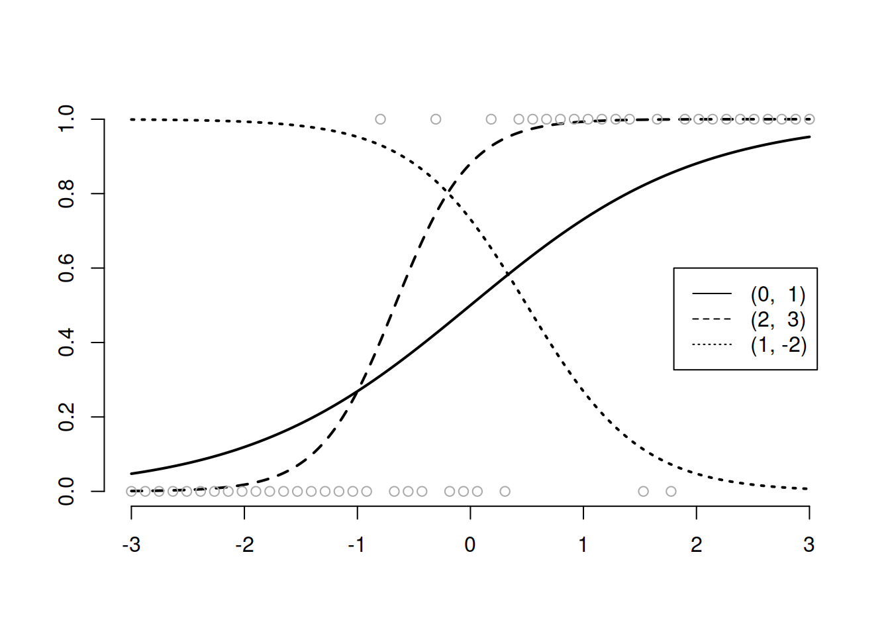

Binary Logistic Regression
Flashcards

Binary data
How do we proceed if we want to perform a similar analysis to linear regression but for a response variable which is not numeric?
Consider the following questions:
- What features of speech influence the likelihood of an utterance being perceived as true/false?
- What lifestyle and demographic variables influence the chances that a person does/does not smoke?
- Does preference for milk vs dark chocolate depend on personality traits?
The common thread in the questions above is that they all contain a dichotomy: “hired/not hired,” “true/false,” “does/does not,” “milk vs dark.”1
In practical research, many times we end up recording which category each unit belongs to, or whether an event or characteristic is either present (success) or not (failure). We wish to examine factors associated with the event. Since we can rarely predict exactly whether an event will happen or not, what we in fact look for are factors associated with the probability of that event happening.
This is consistent with linear regression. In linear regression we model the mean of \(y\) as a function of \(x\). Remember, for each value of \(x\) we can have many possible values of \(y\) see Week 1.
However, the mean of a binary 0/1 variable is the probability of success, i.e. \(P(Y = 1)\). Consider 10 observations on a variable \(y\) comprising 7 successes and 3 failures: 0,0,0,1,1,1,1,1,1,1 \[ \text{average of }y = \frac{3*0 + 7*1}{10} = \frac{7}{10} = \frac{\text{num. successes}}{\text{num. trials}} = \text{prob. success} = P(Y = 1) \]
So, when the response is binary, we are modelling the probability of success as a function of \(x\).
Consider this example showing whether or not a random sample of individuals have a given condition (0 = no, 1 = yes) at a given age. The x-axis displays age in years after mean-centering, and the y-axis whether or not the subject has the condition. 
We notice a few things from the plot.
The linear regression model (red line) clearly extends beyond the possible range of values for a probability, which must be between 0 and 1. We can notice negative predictions for the probability associated to low ages, and even predicted probabilities greater than 1 for larger ages. This doesn’t make any sense!
It seems that higher ages are associated with more occurrences of the condition. Similarly, with lower ages we have less occurrences of the condition.
There must be an area in the middle where the probability of having the condition increases sharply, and then the probability is pretty stable in the two ends.
The logistic regression model (blue curve) captures this pattern. In the low ages, the probability of having the condition is very low. For high ages, the probability of having the condition is high (there are barely any people without the condition for mean-centred ages > 5). There clearly is a zone (ages 0-5) where people have or don’t have the condition. This is where the transition from low to high probability of success occurs.
These exercises will show you how to fit a logistic regression model, and explain how to interpret the parameters.
Introducing GLM
Research Questions
Is susceptibility to change blindness influenced by level of alcohol intoxication and perceptual load?
Watch the following video:
Simons, D. J., & Levin, D. T. (1997). Change blindness. Trends in cognitive sciences, 1(7), 261-267.
You may well have already heard of these series of experiments, or have seen similar things on TV.
For a given participant in the ‘Door Study,’ give a description of the outcome variable of interest, and ask yourself whether it is binary.
Read in the data, and plot the relationship between the age variable and the notice variable.
In ggplot, make sure you use geom_point(). Then, add to the plot the following code, geom_smooth(method = "lm", se = FALSE). This will plot a simple linear regression fit lm(notice ~ age).
Just visually following the line from the plot produced in the previous question, what do you think the predicted model value would be for someone who is aged 30?
What does this value mean?
What we are really interested in here is looking at how specific factors influence the probability of noticing the experimenter-swap.
We also recall that:
- a probability must be greater than or equal 0
- a probability cannot be larger than 1
Recall that in linear regression we have a term of the following form on the right-hand side of the equal sign \[ \beta_0 + \beta_1 x_{i1} + \dots + \beta_k x_{ik} \] Such term is called a linear predictor because is a linear combination of the predictors.
The possible values of the linear predictor range from \(-\infty\) to \(\infty\). On the contrary, a probability ranges from 0 to 1.
Clearly, we cannot directly model the probability of success as the linear predictor. We need to first transform the probability to range from \(-\infty\) to \(\infty\) and then it is this transformation of the probability that is related to the linear predictor.
This is where the Generalised Linear Model (GLM) comes in. With a little bit of trickery, we can translate probability (restricted to between 0 and 1, and not represented by a straight line), into “log-odds,” which is both linear and unbounded (see Figure 1).
Probability, odds, log-odds
If we let \(p\) denote the probability of a given event, then:
The probability \(p\) ranges from 0 to 1.
The odds \(\frac{p}{1-p}\) ranges from 0 to \(\infty\).
To see this, consider what happens in the extremes.
When \(p=0\), \(p / (1-p) = 0 / (1-0) = 0/1 = 0\).
When \(p = 1\), \(p / (1-p) = 1 / (1-1) = 1/0 = \infty\).
The log-odds \(\log \left( \frac{p}{1-p} \right)\) ranges from \(-\infty\) to \(\infty\).
To see this, consider again what happens in the extremes.
When \(\frac{p}{1-p} = 0\), we have \(\log(0) = -\infty\).
When \(\frac{p}{1-p} = \infty\) we have \(\log(\infty) = \infty\).
Figure 1: Probability, Odds and Log-odds
- The probability of a coin landing on heads if 0.5, or 50%. What are the odds, and what are the log-odds?
- The 2020 Tour de France winner, Tadej Pogacar, was given odds of 11 to 4 by a popular gambling site (i.e., if we could run the race over and over again, for every 4 he won he would lose 11). Translate this into the implied probability of him winning.
How is this useful?
Recall the linear model formula we have seen a lot of over DAPR2 so far. For simplicity, focus on a single predictor \(x_{i1}\) but this can be easily generalised to the case of \(k\) predictors \(x_{i1}, ..., x_{ik}\).
\[ \color{red}{Y_i} = \color{blue}{\beta_0 + \beta_1 \ x_{i1}} + \epsilon_i \]
Because we are defining a linear relationship here, we can’t directly model the probabilities (because they are bounded by 0 and 1, and they are not linear). But we can model the log-odds of the event happening.
The logistic regression model requires two components:
One linking the transformed probability (log-odds) to the linear predictor: \[ \color{red}{\log \left(\frac{p_i}{1-p_i} \right)} = \color{blue}{\beta_0 + \beta_1 \ x_{i1} } \]
The second liking the response variable with the probability: \[ Y_i \sim \text{Binomial}(n, p_i) \]
For binary responses, \(n = 1\).
The following plot displays the effect of varying the intercept and slope (specified respectively as \((a,b)\)) on the predicted probability of success.

In the above plot it seems like the best curve to fit the probability of success is the one obtained with \(\beta_0 = 2\) and \(\beta_1 = 3\) (dashed line). The dotted line is the worst fit as it gives a high probability of success in an area of no observed success and a low probability of success in an area of high observed successes.

To fit a logistic regression model, we need to useglm(), a slightly more general form of lm().
The syntax is pretty much the same, but we need to add in a family at the end, to tell it that we are doing a binomial logistic regression.
(Note, we’ve been calling our outcome variable “binary,” but now we use “binomial?” Why? Well in the situation that we have a binary outcome consisting of 2 categories represented by 1s and 0s, we actually have a special case of a binomial (“the number of successes in n trials”) where \(n=1\), which is why it often gets referred to as ‘binary logistic regression’)
Using the drunkdoor.csv data, fit a model investigating whether participants’ age predicts the log-odds of noticing the person they are talking to be switched out mid-conversation. Look at the summary() output of your model.
lm(y ~ x1 + x2, data = data)
- is the same as:
glm(y ~ x1 + x2, data = data, family = "gaussian")
(Gaussian is another name for the normal distribution)
Interpreting coefficients from a logistic regression can be difficult at first.
Recall what we are modelling - we are no longer modelling \(y\), but the log-odds of \(y\).
Based on your model output, complete the following sentence:
“Being 1 year older decreases _________ by 0.13.”
Unfortunately, if we talk about increases/decreases in log-odds, it’s not that intuitive.
What we often do is translate this back into odds.
The opposite of the natural logarithm is the exponential (see here for more details if you are interested), and in R these functions are log() and exp():
log(2)## [1] 0.6931472exp(log(2))## [1] 2log(exp(0.6931472))## [1] 0.6931472Exponentiate the coefficients from your model in order to translate them back from log-odds, and provide an interpretation of what the resulting numbers mean.
Based on your answer to the previous question, calculate the odds of noticing the swap for a one year-old (for now, forget about the fact that this experiment wouldn’t work on a 1 year old!)
And what about for a 40 year old?
Can you translate the odds back to probabilities?
We can easily get R to extract these predicted probabilities for us.
- Calculate the predicted log-odds (probabilities on the logit scale):
predict(model, type="link")
- Calculate the predicted probabilities:
predict(model, type="response")
The code below creates a dataframe with the variable age in it, which has the values 1 to 100. Can you use this object in the predict() function, along with your model, to calculate the predicted probabilities of the outcome (noticing the swap) for each value of age? How about then plotting them?
ages100 <- tibble(age = 1:100)
Shortcut!
We can do this really easily with the sjPlot package!
Try running this code (replace model1 with the name of your model):
library(sjPlot)
plot_model(model1, type="pred")
We have the following model coefficients, in terms of log-odds:
summary(model1)$coefficients## Estimate Std. Error z value Pr(>|z|)
## (Intercept) 7.1562479 1.57163317 4.553383 5.279002e-06
## age -0.1299931 0.02818848 -4.611569 3.996402e-06We can convert these to odds by using exp():
exp(coef(model1))## (Intercept) age
## 1282.0913563 0.8781015In order to say something along the lines of “For every year older someone is, the odds of noticing the mid-conversation swap (the outcome event happening) reduces by a factor of 0.88.”
Why can we not translate this into a straightforward statement about the change in probability of the outcome for every year older someone is?
GLM as a classifier
From the model we created in the earlier exercises:
model1 <- glm(notice ~ age, data = drunkdoor, family="binomial")- Add new column to the drunkdoor dataset which contains the predicted probability of the outcome for each observation.
- Then, using
ifelse(), add another column which is these predicted probabilities translated into the predicted binary outcome (0 or 1) based on whether the probability is greater than >.5.
- Create a two-way contingency table of the predicted outcome and the observed outcome.
Hint: you don’t need the newdata argument for predict() if you want to use the original data the model was fitted on.
A table of predicted outcome vs observed outcome sometimes gets referred to as a confusion matrix, and we can think of the different cells in general terms (Figure 5).
Another way to think about how our model is fitted is that it aims to maximise (TP + TN)/n, or, put another way, to minimise (FP+FN)/n.
Which is equivalent to the good old idea of minimising sums of squares (where we minimise the extend to which the predicted values differ from the observed values).
Figure 5: Confusion Matrix
What percentage of the n = 120 observations are correctly classified by our model, when the threshold is set at 0.5?
Less guided exercises
Approaching a research question
Recall our research question, which we will now turn to:
Research Questions Is susceptibility to change blindness influenced by level of alcohol intoxication and perceptual load?
Try and make a mental list of the different relationships between variables that this question invokes, can you identify one variable as the ‘outcome’ or ‘response’ variable? (it often helps to think about the implicit direction of the relationship in the question)
Think about our outcome variable and how it is measured. What type of data is it? Numeric? Categorical?
What type of distribution does it follow? For instance, do values vary around a central point, or fall into one of various categories, or follow the count of successes in a number of trials?
Think about our explanatory variable(s). Is there more than one? What type of variables are they? Do we want to model these together? Might they be correlated?
Are there any other variables (measured or unmeasured) which our prior knowledge or theory suggests might be relevant?
Fitting the model
- Write a sentence describing the model you will fit. It might help to also describe each variable as you introduce it.
- Fit the model.
Things to think about:
- Do you want BAC on the current scale, or could you transform it somehow?
- Is condition a factor? What is your reference level? Have you checked
contrasts(drunkdoor$condition)? (This will only work if you make it a factor first)
Compute 95% confidence intervals for the log-odds coefficients using confint(). Wrap the whole thing in exp() in order to convert all these back into odds and odds-ratios.
Try the sjPlot package and using plot_model() on your model, but with type="est". What do you get?
Tip:, for some people this plots seems to miss out plotting the BAC effect, so you might need to add:
plot_model(model, type="est") +
scale_y_log10(limits = c(1e-05,10))
Looking beyond
This week we have looked at one specific type of Generalised Linear Model, in order to fit a binary logistic regression. We can use GLM to fit all sorts of models, depending on what type of data our outcome variable is, and this is all through the family = part of the model syntax.
For instance, if we had data which was binomial but with an \(n > 1\), for instance the number of correct answers in 10 trials:
| participant | trials_correct | trials_incorrect | x1 |
|---|---|---|---|
| id1 | 1 | 9 | 114 |
| id2 | 4 | 6 | 113 |
| id3 | 7 | 3 | 83 |
| id4 | 8 | 2 | 141 |
| id5 | 3 | 7 | 115 |
| ... | ... | ... | ... |
We could model this with family = "binomial" using the two columns as the outcome:
glm(cbind(trials_correct, trials_incorrect) ~ x1, data = data, family = "binomial")
Or if we had count data, which can range from 0 to Infinity (theoretically), e.g.:
| person | n_fish_caught | age |
|---|---|---|
| id1 | 8 | 44 |
| id2 | 7 | 46 |
| id3 | 13 | 29 |
| id4 | 6 | 56 |
| id5 | 14 | 37 |
| ... | ... | ... |
We model this using family = "poisson":
glm(n_fish_caught ~ age, data = data, family = "poisson")
For real studies demonstrating the effects used in the example here, see:
- Simons, D. J., & Levin, D. T. (1997). Change blindness. Trends in cognitive sciences, 1(7), 261-267.
- Colflesh, G. J., & Wiley, J. (2013). Drunk, but not blind: The effects of alcohol intoxication on change blindness. Consciousness and cognition, 22(1), 231-236.
- Murphy, G., & Murphy, L. (2018). Perceptual load affects change blindness in a real‐world interaction. Applied cognitive psychology, 32(5), 655-660.
References
If you want a really nice resource to help you in your future studies, then https://bookdown.org/roback/bookdown-BeyondMLR/ is an excellent read.
A note: This sort of binary thinking can be useful, but it is important to remember that it can in part be simply a result of measurement. To answer some research questions, we need to consider an event as “success” = 1 and all other possibilities as “failure” = 0. For instance, we might initially consider “has blond hair” to be binary “Yes/No,” but that doesn’t mean that in the real world people either have blond hair or they don’t. We could instead choose to measure hair colour via colorimetric measures of the energy at each spectral wavelength, meaning “blondness” could become a continuum. While binary thinking can be useful, it is not difficult to think of ways in which it can be harmful.↩︎